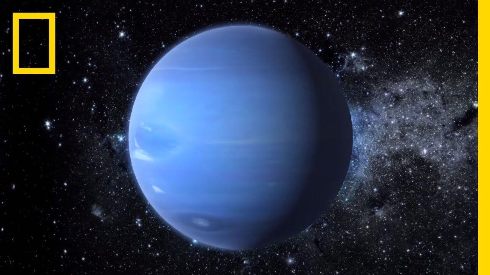
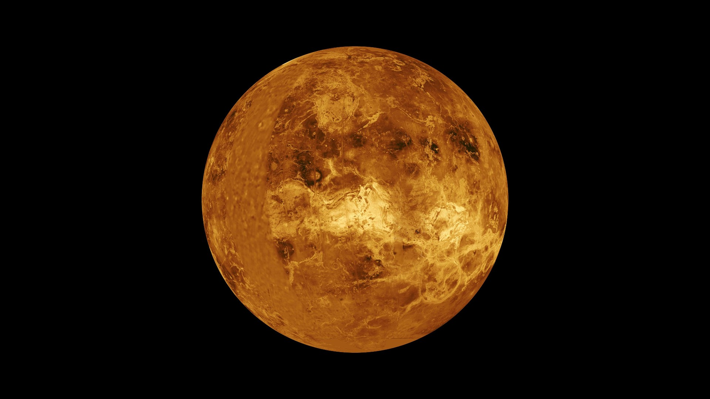

| Earth | Jupiter | Neptune | Venus | |
|---|---|---|---|---|
| Planets | |
|
 |  |
| Mass (1024 kg) | 5.97 | 1898 | 102 | 4.87 |
| Diameter | 12,756 kilometers | 142,984 kilimeters | 49,528 kilometers | 108.2 kilometers |
| Escape velocity (km/sec) | 11.2 (km/sec) | 59.5 (km/sec) | 23.5 (km/sec) | 10.4 (km/sec) |
| Length of day | 24.0 hours | 9.9 hours | 16.1 hours | 18.0 hours |
| Orbital Period | 365.2 days | 4331 days | 59,800 days | 225.0 days |
| Mean Temperature | 15 C | -110 C | -200 C | 464 C |
| Number of Moons | 1 | 79 | 14 | 0 |
| Ring System? | No | Yes | Yes | NO |